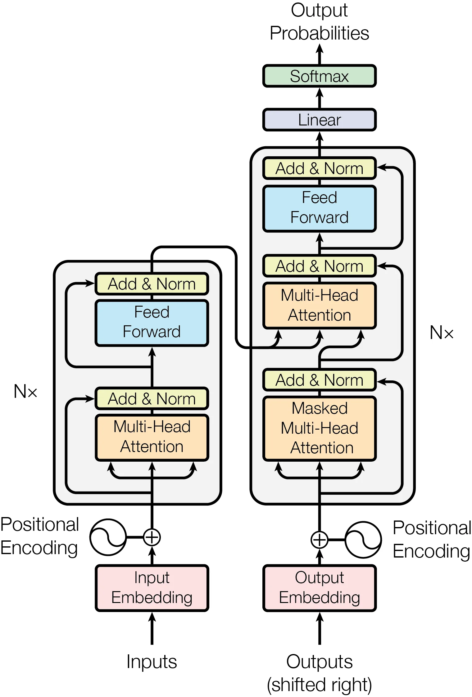
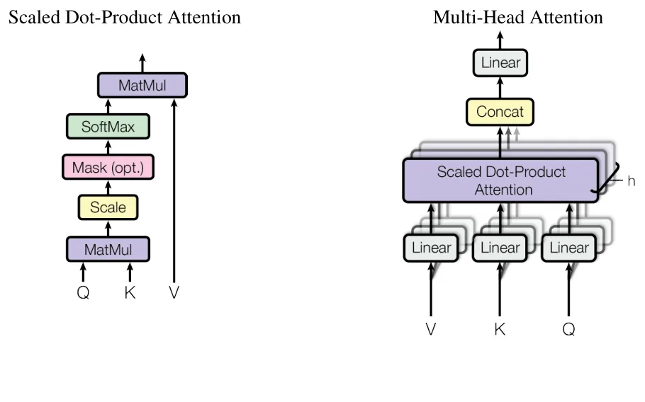
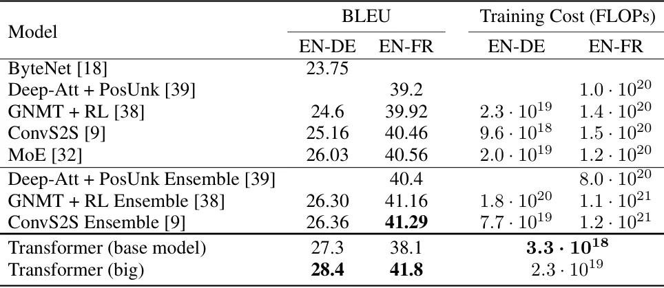
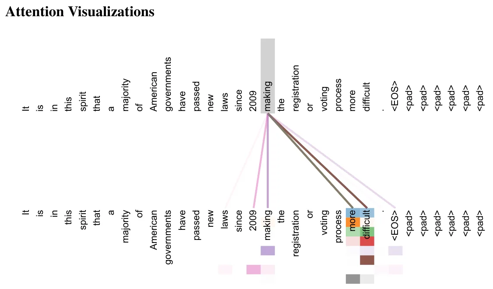

O problema da recorrência
Até 2017, os modelos dominantes para tarefas de sequência — tradução automática, modelagem de linguagem, geração de texto — dependiam de redes neurais recorrentes (RNNs) ou convolucionais em configurações encoder-decoder. As melhores arquiteturas da época, como LSTMs e GRUs, processavam sequências passo a passo: para calcular o estado oculto na posição t, era preciso ter calculado o estado na posição t-1. Essa dependência sequencial impedia paralelização dentro de um exemplo de treino.
O problema se agravava com sequências longas. Como cada passo dependia do anterior, o treinamento ficava lento e a memória limitava o tamanho dos batches. Pior: para relacionar duas palavras distantes na frase, a informação precisava atravessar muitos passos intermediários, dificultando o aprendizado de dependências de longo alcance. Algumas arquiteturas tentaram contornar isso com convoluções (ByteNet, ConvS2S), mas o número de operações para conectar duas posições crescia linearmente ou logaritmicamente com a distância.
Mecanismos de atenção já eram usados como complemento às RNNs, permitindo que o decoder 'olhasse' diretamente para partes relevantes do encoder. Mas em quase todos os casos, a atenção vinha junto com recorrência. A questão que o paper coloca é: e se a atenção fosse suficiente sozinha?
A proposta: arquitetura baseada só em atenção
O Transformer dispensa completamente recorrência e convolução. A arquitetura segue o padrão encoder-decoder, mas usa apenas mecanismos de atenção e redes feed-forward totalmente conectadas, organizadas em camadas empilhadas. O encoder mapeia uma sequência de entrada (x₁, ..., xₙ) para uma sequência de representações contínuas z = (z₁, ..., zₙ). O decoder, dado z, gera a sequência de saída (y₁, ..., yₘ) um símbolo por vez, de forma autoregressiva.
Tanto encoder quanto decoder são compostos por N=6 camadas idênticas empilhadas. Cada camada do encoder tem duas subcamadas: primeiro, um mecanismo de multi-head self-attention; segundo, uma rede feed-forward posicionalmente aplicada (ou seja, a mesma rede é aplicada independentemente a cada posição). Ao redor de cada subcamada há uma conexão residual seguida de normalização de camada, resultando em LayerNorm(x + Sublayer(x)). Todas as subcamadas e embeddings produzem vetores de dimensão dₘₒdₑₗ = 512.
O decoder também tem N=6 camadas, mas com três subcamadas. Além das duas do encoder, ele insere uma terceira que aplica multi-head attention sobre a saída do encoder (a chamada cross-attention). Crucialmente, a subcamada de self-attention no decoder é modificada com mascaramento: cada posição i só pode atender a posições anteriores (j < i), garantindo que a predição em i dependa apenas de saídas já conhecidas. Isso preserva a propriedade autoregressiva durante o treinamento.

Como funciona a atenção escalada por produto escalar
Uma função de atenção mapeia uma query e um conjunto de pares (key, value) para uma saída, todos vetores. A saída é uma soma ponderada dos values, onde o peso de cada value vem de uma função de compatibilidade entre a query e a key correspondente. O Transformer usa 'Scaled Dot-Product Attention': dada uma matriz Q de queries, K de keys e V de values, calcula-se Attention(Q,K,V) = softmax(QKᵀ/√dₖ)V.
O produto escalar QKᵀ mede a compatibilidade entre cada par (query, key). Dividir por √dₖ (onde dₖ é a dimensão das keys) é essencial: para valores grandes de dₖ, os produtos escalares podem crescer muito em magnitude, empurrando a softmax para regiões de gradiente extremamente pequeno. O fator de escala 1/√dₖ mitiga esse problema. A softmax transforma os scores em pesos que somam 1, e a multiplicação por V produz a saída ponderada.
Dot-product attention é muito mais rápido e eficiente em memória que additive attention (que usa uma rede feed-forward para calcular compatibilidade), pois pode ser implementado com multiplicação de matrizes altamente otimizada. Para valores pequenos de dₖ, ambos os métodos têm desempenho similar, mas sem o scaling, additive attention supera dot-product para dₖ grandes — daí a importância da divisão por √dₖ.
Multi-Head Attention: olhando para vários aspectos ao mesmo tempo
Em vez de aplicar atenção uma única vez com chaves, valores e queries de dimensão dₘₒdₑₗ, o Transformer projeta linearmente Q, K e V para dimensões menores h vezes (com h=8 cabeças), aplica atenção em paralelo nessas h representações de dimensão reduzida, e concatena os resultados. Cada 'cabeça' aprende a atender a aspectos diferentes da entrada.
Formalmente, MultiHead(Q,K,V) = Concat(head₁, ..., headₕ)Wᴼ, onde headᵢ = Attention(QWᵢQ, KWᵢK, VWᵢV). As matrizes de projeção Wᵢ são aprendidas. Com h=8 cabeças e dₖ = dᵥ = dₘₒdₑₗ/h = 64, o custo computacional total é similar ao de atenção de cabeça única com dimensão cheia, mas o modelo ganha a capacidade de capturar diferentes tipos de relações simultaneamente.
O Transformer usa multi-head attention de três formas: (1) nas camadas encoder-decoder, as queries vêm da camada anterior do decoder e as keys/values vêm da saída do encoder — isso permite que cada posição do decoder atenda a todas as posições da entrada; (2) no encoder, self-attention onde queries, keys e values vêm da saída da camada anterior; (3) no decoder, self-attention mascarada para preservar autoregressividade.

Redes feed-forward e codificação posicional
Cada camada contém uma rede feed-forward totalmente conectada aplicada a cada posição separadamente e de forma idêntica. Essa rede tem duas transformações lineares com uma ReLU no meio: FFN(x) = max(0, xW₁ + b₁)W₂ + b₂. A dimensão interna é dff = 2048, enquanto entrada e saída têm dₘₒdₑₗ = 512. Embora a mesma rede seja usada em todas as posições dentro de uma camada, os parâmetros diferem entre camadas.
Como o modelo não tem recorrência nem convolução, ele não tem noção inerente de ordem. Para injetar informação sobre a posição relativa ou absoluta dos tokens, o Transformer adiciona 'positional encodings' aos embeddings de entrada no encoder e decoder. O paper usa funções seno e cosseno de frequências diferentes: PE(pos, 2i) = sin(pos/10000^(2i/dₘₒdₑₗ)) e PE(pos, 2i+1) = cos(pos/10000^(2i/dₘₒdₑₗ)).
Essa escolha permite que o modelo aprenda a atender a posições relativas, já que para qualquer offset fixo k, PE(pos+k) pode ser representado como função linear de PE(pos). O paper também testou embeddings posicionais aprendidos e obteve resultados quase idênticos, mas as funções sinusoidais podem permitir extrapolação para sequências mais longas que as vistas no treino.
Resultados em tradução automática
Os autores avaliaram o Transformer em duas tarefas de tradução do WMT 2014: inglês-alemão (4.5 milhões de pares de frases) e inglês-francês (36 milhões de pares). Para inglês-alemão, o modelo grande (Transformer big) alcançou 28.4 BLEU, superando todos os modelos anteriores, incluindo ensembles, por mais de 2 BLEU. O treinamento levou 3.5 dias em 8 GPUs P100. Mesmo o modelo base superou todos os modelos publicados anteriormente com uma fração do custo computacional.
Para inglês-francês, o modelo grande atingiu 41.0 BLEU, superando todos os modelos únicos anteriores com menos de 1/4 do custo de treino do então estado da arte. O modelo base usou média dos últimos 5 checkpoints (salvos a cada 10 minutos); o modelo grande usou média dos últimos 20. Na inferência, usaram beam search com tamanho 4 e penalidade de comprimento α=0.6.
O paper estima operações de ponto flutuante multiplicando tempo de treino, número de GPUs e capacidade sustentada de cada GPU. Essa métrica mostra que o Transformer não só é mais preciso, mas também muito mais eficiente computacionalmente que arquiteturas baseadas em recorrência ou convolução para essas tarefas.

Variações da arquitetura: o que importa
Para entender quais componentes são essenciais, os autores variaram o modelo base de várias formas, medindo desempenho em inglês-alemão no conjunto de desenvolvimento newstest2013. Variar o número de cabeças de atenção mostrou que uma única cabeça é 0.9 BLEU pior que o melhor ajuste (h=8), mas muitas cabeças também prejudicam. A qualidade também cai ao reduzir a dimensão das keys (dₖ), sugerindo que determinar compatibilidade não é trivial.
Modelos maiores são melhores, como esperado: aumentar dₘₒdₑₗ e dff melhora BLEU. Dropout (com taxa 0.1 no modelo base) é crucial para evitar overfitting — sem ele, o desempenho cai significativamente. Substituir codificação posicional sinusoidal por embeddings aprendidos produziu resultados quase idênticos, validando a escolha de funções trigonométricas.
Reduzir o número de camadas de 6 para 2 piora significativamente (23.7 BLEU), enquanto 4 camadas dão 25.3 BLEU. Isso mostra que a profundidade importa, mas 6 camadas parecem suficientes para essa tarefa. O custo computacional permanece constante ao variar número de cabeças e dimensões, desde que o produto seja mantido, mas a qualidade varia — evidência de que multi-head attention captura algo que atenção de cabeça única não captura.
Generalização: parsing sintático em inglês
Para testar se o Transformer generaliza além de tradução, os autores aplicaram o modelo a parsing de constituintes em inglês, uma tarefa estruturalmente diferente. Treinaram em Wall Street Journal (WSJ) do Penn Treebank (cerca de 40 mil sentenças) e testaram em Section 23. Também avaliaram em configuração semi-supervisionada, pré-treinando em um corpus maior (BerkleyParser com 17 milhões de sentenças).
Com apenas dados do WSJ (40 mil sentenças), o Transformer alcançou desempenho competitivo. Com pré-treinamento no corpus maior, o modelo de 4 camadas superou todos os modelos anteriores exceto o Recurrent Neural Network Grammar, e ficou próximo do melhor resultado. Isso demonstra que a arquitetura não é específica para tradução — ela aprende representações úteis para tarefas de sequência em geral.
Importante notar que o Transformer não foi desenhado especificamente para parsing. A mesma arquitetura, com ajustes mínimos de hiperparâmetros, funciona bem em tarefas diferentes. Isso sugere que mecanismos de atenção são uma primitiva poderosa e geral para modelagem de sequências, não apenas um truque para tradução.

O que o paper não mostra
Os experimentos cobrem tradução e parsing, mas não testam tarefas de geração de texto longo, classificação de documentos ou outras aplicações de NLP. Não há análise de como o modelo se comporta com sequências muito mais longas que as vistas no treino, apesar da afirmação sobre extrapolação de codificações posicionais sinusoidais.
O paper não discute em profundidade por que multi-head attention funciona melhor que single-head, além da intuição de que captura 'diferentes aspectos'. Não há análise sistemática de quais padrões linguísticos cada cabeça aprende, embora visualizações mostrem que elas atendem a fenômenos diferentes. Trabalhos posteriores investigariam isso mais a fundo.
A complexidade O(n²) da atenção para sequências longas é mencionada brevemente, mas não explorada. Para textos de milhares de tokens, isso se torna um gargalo sério — algo que o paper reconhece ao mencionar planos futuros de investigar 'mecanismos de atenção local e restrita' para lidar com entradas e saídas grandes como imagens, áudio e vídeo.
Finalmente, os resultados são em tarefas supervisionadas com datasets grandes. O paper não explora aprendizado com poucos exemplos, transferência zero-shot entre idiomas ou outras formas de generalização que se tornariam centrais em trabalhos posteriores. O foco é demonstrar que atenção pura funciona, não explorar todos os seus limites.
Por que este paper importa
Attention Is All You Need não foi o primeiro a usar atenção, nem o primeiro a propor alternativas a RNNs. Mas foi o primeiro a mostrar que atenção sozinha, sem recorrência ou convolução, é suficiente para estado da arte em tarefas de sequência. Essa demonstração mudou a trajetória do campo: praticamente todos os modelos de linguagem grandes desde então — BERT, GPT, T5, modelos multimodais — são baseados na arquitetura Transformer.
A paralelização que o Transformer permite foi essencial para a escalabilidade. Treinar modelos com bilhões de parâmetros em trilhões de tokens só se tornou viável porque a atenção pode ser computada em paralelo, ao contrário da recorrência sequencial. O salto de GPT-2 para GPT-3, de BERT-base para modelos de centenas de bilhões de parâmetros, depende dessa propriedade.
O mecanismo de self-attention também provou ser mais interpretável que estados ocultos de RNNs. Visualizar matrizes de atenção revela quais tokens o modelo considera relevantes para cada predição, facilitando análise e debug. Isso não resolve o problema de interpretabilidade completamente, mas oferece uma janela para o funcionamento interno do modelo.
Sete anos depois, o Transformer permanece a arquitetura dominante em NLP e está se expandindo para visão computacional, áudio, biologia computacional e outras áreas. O título do paper — 'Attention Is All You Need' — foi validado: para uma enorme classe de problemas, atenção realmente é tudo que você precisa.
O que fica
- O Transformer elimina recorrência e convolução, usando apenas mecanismos de atenção empilhados em camadas encoder-decoder com conexões residuais e normalização.
- Multi-head attention permite que o modelo atenda a diferentes aspectos da entrada simultaneamente, e a paralelização reduz drasticamente o tempo de treino comparado a RNNs.
- O modelo alcançou 28.4 BLEU em inglês-alemão e 41.0 em inglês-francês, superando todos os modelos anteriores com uma fração do custo computacional.
- A complexidade O(n²) da atenção em relação ao comprimento da sequência é uma limitação para textos muito longos, algo que o paper reconhece mas não resolve.
Paper original: Attention Is All You Need
Comentários
Nenhum comentário ainda. Seja o primeiro.